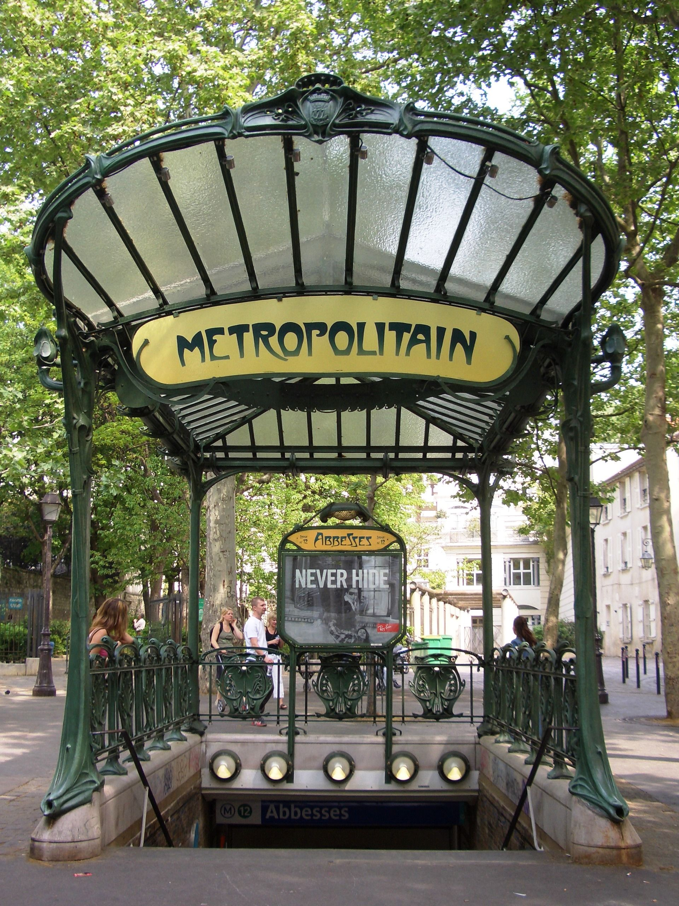

Documentation
Dystotypo is a digital magazine that allows you to immerse yourself in the universe of dystopian stories through the use of different fonts and visual grammar throughout history. The historical visual themes you can find on the top menu are all linked to our works' topics of authoritarian governments, alienation and mass culture.
Behind the concept and our works
Our three chosen works pertain to the genre of Dystopian Novels. All of them have been written in the 20th century, closely before or after the second world war, a time when the idea of a benevolent “progress” in science, technology and mass media is particularly put into question, as it is observed to be also put at the service of totalitarian regimes and war propaganda. All of our authors - Ray Bradbury, George Orwell and Aldous Huxley - use creativity and science fiction to make a political criticism about the present they lived in. For them, the idea was of stretching the logic of certain present dynamics in science, technology, mass media to see how far it could go, if driven towards totalitarian ends.
While our works differ in the angles they take in their negative projection of the present (or close past) into the future, we can observe a certain connection in their main themes. We could argue that all of these works are concerned with the problem of truth (and its distortion), of written memory and thoughts (by opposition to audiovisual media), and of the feeling of time (that is, a sense of a history and of a potential future).
Truth is either hidden, censored and distorted (Farhenheit 451 and 1984), or it is lost in an ocean of insignificance, of consensual and shallow contents (Brave New World). Written memory and thoughts are dangerous artifacts that governments attempt to control entirely (1984) or downright burn (Farhenheit 451), if it is not just ignored by citizens hypnotically drugged to be satisfied without them, through “soma” (Brave New World). The feeling of history is totally obliterated by mass media propaganda and censorship in 1984, the past is forgotten in Farhenheit 451, and in Brave New World, the bureaucracy aiming at preserving the system in its exact static state, as well as the continuous escape of time by the population through the drug of “soma”, prevents the possibility of a future that differs from the ("perfect") present.
Of course, these three concepts are related, as truth can be better accessed or unveiled through written memory, and this latter also is responsible for a feeling of time, of archived history and of the imagination of a future. This is why the written medium, in its asynchronous and individual readings (in contrast to synchronous and collective television consumption) are subject to various forms of control, by the fictional but familiar totalitarian regimes in our three novels.
Structure
The project is structured in the following pages:
- Index.html: This page is presented as the landing space in which we welcome our user with one of the most important elements of the project which is the TV noise animation in the background. On purpose played at all times during the "Telescreen" theme, in order to cause some cause of annoyance extremely related to the fact that the telescreen plays a big role in all the issues presented in our project.
- Home.html: This is the home area of the project in which one can understand the issues being presented, through the descriptions of each work. The option of changing themes is presented at all times, even while scrolling the page, so the user can understand the difference among those at any point he/she wants.
- Textspage.html: After having landed on Index.html and explored Home.html for an introduction, the user arrives in the Textspage.html which are actually presented the works (1984, Fahrenheit 451 and Brave New World). Like on the home page, is possible to change the themes at any times while reading the chosen text. The division of information happened in the following way: one can choose a text in the "menu" left div, or to compare all the three of them; one can as well highlight different concepts in the texts through this menu. The second div, on the right is where the chosen text will be displayed. The third div is the collapsible menu for the metadata highlights - the reason of having a collapsible menu being that one may want to either see the highlights directly in the displayed text(s), and/or prefer to have them listed dynamically, by concept.
- Documentation.html: The final page of our project is the documentation page in which you are right now, which explains the concept of our project, its relatedness to our chosen works, our choices in terms of metadata highlight and, most importantly, where our different themes are introduced as well as the stylistic choices we made to apply them.
Metadata
Before the referenced works were uploaded on the website, they were enriched with metadata. The process consisted of manually identifying the concepts mentioned above: Truth, Memory and Time. Those were the concepts in which the dystopian stories were mainly concerned about, since the presence of places, people and characters didn't seem appropriate for these texts in our highlights.
Through our metadata markup of each of our texts, we took care of meaningfully annotating words that could pertain to these concepts, according to each of our texts' own universe and its particular framing of truth, memory and time as such. This second-level reading was to be made by us as humans, rather than automatically generated: the consist of singular interpretations, that we deliberated with each other while reading the texts, as to what could pertain or not in the concepts of "truth", "memory" and "time" (which stay rather general concepts, sometimes hard to distinguish between each other). Thanks to this human annotation, we managed to create parallel significations between our chosen texts, and to add a second-layer of meaning, on top of the more "noisy" information of the texts.
Each text was encoded inside a separate html file. As such, in order to add more texts to our magazine, one would need to follow these same steps: create a HTML structure with the new text and encode it following the already made tags. All the rest would be done by the existing themes encoded in our CSS files, and the general file JavaScript being executed on our pages.
For each theme, our choices of color for the metadata annotation followed a rule: "memory" highlights had to be in the color that stands in between the highlight color chosen for "truth" and the one chosen for "time", as one could argue that memory is a mixture of truth (at least, its feeling or its feeling of absence) and time (at least, from the past and as a projection into the future). For the "telescreen" theme, for instance, truth fragments are highlighted in red (color associated to danger), time fragments are highlighted in blue (which is associated to stability); for memory, as such, the appropriate color that was chosen is purple (at the intersection of red and blue).
Notes on images and gifs
For our texts' images, we generated images through the artificial intelligence model of Dall-E, by Open-AI. While our works do not originally include images in their book editions, to better fulfill the requirements for this project and do so in an interesting way, we decided to generate images by a currrent image generation model, which has its own totalitarian and dystopian aura to it.
AI generated images, taken from an enormous corpus of tagged images, can be seen as a totalitizing intelligence which does not allow room for exceptions to its probabilistic rule, nor to singular deviancies. Moreover, because it is based only on past images, it repeats in the present past stereotypes, rather than allowing a space for unpredicted possibilities and experiences. Past memories become an eternalized present and as such close the future, which seems to us to relate strongly to the relations our dystopian works had with truth, time and memory. Other images, such as in the homepage, have been taken from other places on the web.
Finally, we have used, for the themes of "cybernetic" and "art nouveau", some animated images or gifs: for the first one, due to the evolving nature of images as increasingly dynamic, and for the latter, because of the "magical" dimension inherent to Art Nouveau that will be explained further, below.
Art Nouveau
Introduction
Art Nouveau was born in the late 19th Century against the excesses of industrialization and the reproduction of ancient styles. Intended before all to the architectural and decoration arts, the theme is particularly adaptable to a website's need.
This style is characterized by inventiveness, presence of rhythms, colors and ornamentations inspired by nature's geometries. It occupies all available space, especially the one of day-to-day life: making it a totalitarian style of its own kind.

An art-nouveau metro station entrance in Paris, designed by Hector Guimard for the universal exposition of 1900.
Art Nouveau artists had an ideal: encouraging the flourishing of modern men, in the wake of the 20th Century. As such, it wanted to emancipate from ancient styles, renew art. One of the most important feature of Art Nouveau works is general harmony (in opposition to industrial cacophony). Moreover, recurrent themes are sensuality, women and love. Those was depicted in many posters and advertisements – the latter being the form through which the style was the most popularized.
An advertisement for an alcohol that depicts both women and sensuality, with floral themes
Artists of the Art Nouveau wave bathed in printed images, which for the first time in history (at least in Western Europe), touched all the social strata of society. Because of the industrial context, it also bathed in science fiction, such as the anticipation novels of Jules Verne, for which the book covers used colors of the Art Nouveau, with machine imagery in a floral décor. The exoticism of natural landscapes was meant, by the artistic movement, to be reconciled with man-made machines, real or imagined.
A book cover of Jules Verne
Fonts
The fonts used for this theme were 'Runy Tunes Revisited' for the header, headings and bold content, and 'Psychoart Typeface' for all the rest of the texts on the website.
Metadata collapsible, with headings in Runy Tunes and annotated text list in Psychoart
While Runy Tunes is described by its typographer as 'an odd combination of Art Nouveau with Old Morse runes', Psychoart Typeface is inspired by Art Nouveau with a psychedelic touch to it. The two have been chosen for their complementarity, both in terms of sharpness of letters (Runy Tunes) vs their roundness (Psychoart Typeface), as well as the narrative they evoke. Indeed, Runy Tunes evokes the mythical Viking past, through its old morse inspiration, and on the contrary, Psychoart Typeface evokes the floury tentations of a futuristic, psychedlic experience. We could say that the first applies to 1984 as a mythical authority (hence why it is used in headings and header), while the latter applies to Brave New World because of its narrative of drugs that appease its users (hence its use in the texts themselves). For Brave New World as much as the texts of the website, in order to be dystopian, paradoxically, the experience must be soothing rather than conflictual, or worst, politicizing.
The cursor itself becomes a flower, as it hovers over the texts div which contain the precious material for the reader to come face to face with the dystopian reality he/she lives in. A salvatory flower, or another drug meant to keep the reader in an asleep state?
Colors
The color palette used for this theme has been chosen for its vividity and level of saturation.
As we can see from illustrations above, dark red and mustard yellow are important colors of Art Nouveau. They are both high-pitched, and saturated. Another color often used by Art Nouveau illustrations and posters is light, pastel blue, which has a dreamy quality to it - especially when in contrast to a darker red background, which evokes the body, materiality.
In the movie "Celine and Julie go Boating" (1973), Jacques Rivette used and revisited the typography and colors of the Art Nouveau movement, as well as the dense floral décor of Paris in summer. We chose to apply the pastel blue and scarlet red of the dresses of the two main characters of his popular magic movie - that are fighting the dystopian boredom of cultural conservatism and bourgeoisie mores.
Screenshot from 'Celine and Julie Go Boating' movie by Jacques Rivette
Here is the precise color palette:

For the background, present in every text div, we choose to use a saturated light green, to suggest the color of trees in summer, and to further the floral dimension of our Art Nouveau theme.
Layout
The layout was crucial in the Art Nouveau theme, which aspired for an homogenous and symmetrical dispositions of elements. No space should be left blank and all the space must be occupied, either by text or by floral motives.
Texts are displayed within enormous, though not empty, margins of floral motives and patterns. The layout of the text seems to be inside an invitation card, for a fancy dinner in end of 19th Century Paris. It also evokes the frame of a painting, which in Art Nouveau was a crucial object of work, as it was a movement focused on decorative aspects. The more extravagant, the richer in motives: the better.
References
Fonts:
- https://www.1001fonts.com/runytunesrevisited-font.html
- https://www.fontspace.com/psychoart-font-f78786
Movie: Celine et Julie vont en bateau, Jacques Rivette (1973)
Wikipedia:
- https://fr.wikipedia.org/wiki/Art_nouveau
- https://en.wikipedia.org/wiki/Art_Nouveau_in_Paris
Cybernetic
Introduction
Cybernetic was a term coined by mathematician and philosopher Norbert Wiener in the mid-1940s. However, its artistic cousins dates back to the beginning of the 20th Century, with the notable example of Futurism. For this machinic, futuristic last theme, we chose to blend the philosophy of cybernetic, the artistic movement of futurism and some anticipations of the recent progress in machine learning, deep neural networks and artificial intelligence.
Because of the dystopian nature of our works and project, the theme has an unmissable cyberpunk feel to it, as if its visual grammar itself was yelling "no future" to its reader. However, the future holds some ambiguity in its totalizing calculations.
There are multiple layers to this theme. In the first, deepest layer, a totalizing grid of digits that evolved to go to 5 rather than 2, thanks to advances in quantum computing, make truth, time and memory rigidly determinate. However, a second layer appears on top of it in text boxes: that of a two-dimensional coding, the one of the "hacker" (that visually appears as the cursor hovers over the text div). The hacker finds some vulnerability in the megamachine and through his coding, manages to make texts appear for the website's reader - not only in unreadable numbers. However this programmed text apparition is vulnerable: it glitches, shivers.
The hacker imaginary, in between physical reality and virtual lines of digits
To go back to this theme's inspirations, it is important to recall that Norbert Wiener derived the word ‘cybernetics’ from kybernetes, the Greek word for steersman, conjuring up the sailor who struggles with changing winds, currents and tides in guiding a ship. Cybernetic as such, by its own roots and etymology, suggests a struggle against the current – here, the currents of algorithmic feedback loops and totalitarian, calculated control.
Norbert Wiener in class, with his machine
As for futurism, the artistic movement celebrated innovation, modernity, the 'machine age'… and speed. The latter theme particularly inspired this theme, in its header. Perpetual and rapid movement being a common feature to both Futurism and Cybernetic, and conceived as a form of power, we decided to hint to it through the animated background of the navbar.
What is interesting for us in Futurism is how Filippo Marinetti, its founder, wanted to "rewrite culture", in a way. Mixed with algorithmic calculations and cybernetic feedback loops, this rewriting becomes a totalitarian force against which to struggle, to still be able to write and read something that is different. That is, text that is not pre-calculated and determined by the totalitarian megamachine of the future.
A futuristic painting of the early 20th Century, which already evokes the dizzying movement of speed
Being in the future, speed is in this theme represented in a dynamic manner through a gif, of which the abstract movement from right to left evokes the speed of transportation system - though this transportation could as well be the transport of information, in a cybernetic logic. The movement backwards of the gif seems unstoppable.
To summarize this theme's general applications of historical inspirations, projected in the future: we made everything moving, glitching, electronically palpitating. The cybernetic future is dynamic, how much dystopian and determined it will come to be.
Fonts
For the fonts of this theme, we chose to use two: one major and one minor. For the minor, it consists of the 'Snorter' font, only in the header and navbar of the pages. This font evokes futurism, by being constituted of dots – escaping as much as possible the confines of simple, paper-based typography.
Snorter font used for the Header and the title of the project, having a 3D feel to it
For all the rest of the text, we used the 'Hacked' font, to be in the cybernetic theme introduced earlier, as much as for the idea of a hacker making appear the texts in this futuristic time era of the website. While letters are pixelated and seem to be shaking, uncertain of their own appearance, they are also all capitalized, as if nevertheless screaming the stories they have to tell. All headings and bold content is glitching, as sign-posts that want to attract the attention of the inhabitants of a cyberpunk city – this technical 'default' is itself expressing "no future". The cybernetic dream has become a nightmare.
Both fonts are absolutely discrete in their separation of letters, having definitely broken with the continuous lines of analogic paper.
Colors
For the colors of this theme, we chose the most vivid ones: electronically lighted rather than saturated, as in the Art Nouveau theme. Because of the standardization that comes with the idea of Cybernetics, we decided to use the standard yellow, blue and red for the CSS of the different textual elements. In other words, the probable "mean" of these colors, rather than their nuances. Through those colors, it is as if the texts are fighting totalitarian standardization through in its own territory: subverting the tools of calculative probability against itself.
As for the borders of each div, we decided to use a solid black line, as if each border was built to protect the boxes from their absorption into the sea of digits, in the background of the pages.
Layout
As for the layout, we played with the different animated backgrounds of the webpage, which fill all the available space with lighted digits, dots, coding or written words.
Images are displayed in an holographic fashion, with transparency, in an uncertain relationship with their backgrounds: trying to resist them, without reaching ultimate success.
For the texts, finally it was important in this theme to keep a coding interface kind of layout, as if the texts were coming out of a terminal console. As such, space in the left margin is very low: reduced in importance, as compared to texts on paper. As in a coding terminal or console, all the text appears to be shrunk to the left, as lines of computer instructions do not take all the space available and leave extensive amounts on the right. The padding has been adjusted accordingly to this terminal layout.
The text-layout inspiration of a Visual Studio Code terminal
References
Font: https://www.fontspace.com/hacked-font-f28425
Cybernetic art: https://elephant.art/ghost-in-the-machine-nicolas-schoffer-and-the-birth-of-cybernetic-art-21022022/
Norbert Wiener:
- https://history.computer.org/pioneers/pdfs/W/Wiener.pdf
- Norbert Wiener, Cybernetics: Or Control and Communication in the Animal and the Machine (1948)
Futurism:
- https://www.theartstory.org/movement/futurism/
- https://www.youtube.com/watch?v=YFPIP9NxU30&t=1s&ab_channel=CuriousMuse
Gif:
- https://media.tenor.com/2gfRHLv6GZ8AAAAd/code-coding.gif
- https://giphy.com/gifs/ai-hud-cyberspace-RgWIsbDWOAr1HGqC8t